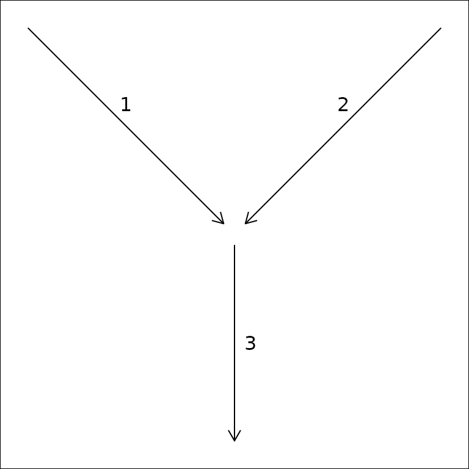
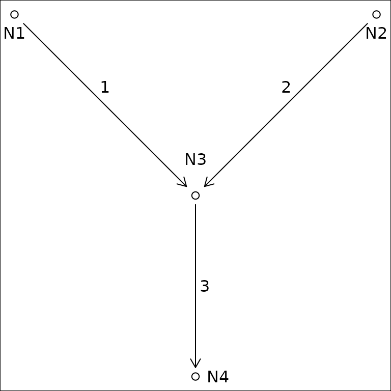
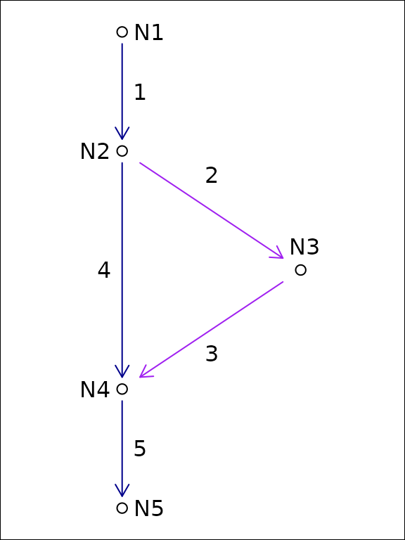
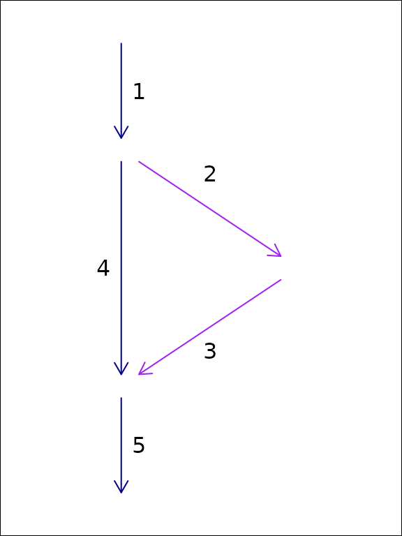

hydroloom
Hydroloom is designed to provide general hydrologic network
functionality for any hydrographic or hydrologic data. This is
accomplished with 1) the hy S3 class, 2) a collection of
utility functions, 3) functions to work with a hydrologic network
topology as a graph, 4) functions to create and add useful network
attributes, 5) and functions to index data to a network of flow network
lines and waterbody polygons.
This introduction covers the hy S3 class and the core
flow network topology concepts necessary to use hydroloom
effectively.
For the latest development and to open issues, please visit the package github repository.
hy S3 class
R’s S3 class system attaches a label to a plain object — here, a
data.frame — so that generic functions like
print(), add_toids(), or
sort_network() dispatch to the right method based on that
label. An S3 object carries its labels as the class()
vector; calling class(x) shows each label in order from
most specific to least specific. An S3 subclass is an object whose
class() vector starts with a more specific label and falls
back to a more general one, so methods written for the parent still
apply. In hydroloom, an hy object is a
data.frame with "hy" added to its class
vector. The subclasses described below — hy_topo,
hy_node, hy_flownetwork,
hy_leveled — are hy objects with one
additional label that tells hydroloom functions which representation
pattern the table follows.
The hy S3 class lets hydroloom work directly with
existing data. hy() converts a data.frame to an
hy data.frame with attributes compatible with
hydroloom functions. hy_reverse() converts a
hy data.frame back to its original attribute names. You can
teach hydroloom how to map your attributes to
hydroloom_name_definitions() with the
hydroloom_names() function.
Most hydroloom functions will work with either a
hy object or a data.frame containing names
registered with hydroloom_names(). Any attributes added to
the data.frame will contain names from
hydroloom and must be renamed in the calling
environment.
Internally, the hy S3 class has an attribute
orig_names as shown below. The orig_names
attribute is used to convert original attribute names back to their
original values. Using the hydroloom names and the
hy S3 object are not required but adopting
hydroloom_names_definitions() may be helpful for people
aiming for consistent, simple, and accurate attribute names.
Network Representation
hydroloom represents a hydrologic network using three
structural patterns, each captured by an S3 subclass of
hy:
-
hy_topo– self-referencing edge list with uniqueidandtoid(dendritic). Most analytic functions (sort_network(),add_levelpaths(),add_streamorder(),accumulate_downstream()) dispatch on this class. See?hy_topo. -
hy_leveled– ahy_topothat additionally carriestopo_sort,levelpath, andlevelpath_outlet_id. Required byadd_pfafstetter(),add_streamlevel(), andto_flownetwork(). See?hy_leveled. -
hy_node– bipartite (edge-node) graph with uniqueid,fromnode, andtonode. Required byadd_divergence(),add_return_divergence(), andsubset_network(). See?hy_node. -
hy_flownetwork– non-dendritic junction table keyed byidandtoid(which need not be unique), optionally withupmainanddownmain. Required bynavigate_network_dfs()for branching navigation. See?hy_flownetwork.
hy() inspects the columns present in a data.frame and
stamps the appropriate subclass automatically.
hy_capabilities() reports which hydroloom functions are
callable on a given object; it is demonstrated at each pipeline stage in
vignette("network_navigation"). The non-dendritic
divergence case study lives in
vignette("non-dendritic").
Representing Dendritic Network Topology
A network of flowlines can be represented as an edge-to-edge (e.g. edge list) or edge-node topology. An edge list only expresses the connectivity between edges (flowlines in the context of rivers), requiring nodes (confluences in the context of rivers) to be inferred.
#> id toid fromnode tonode
#> 1 3 N1 N3
#> 2 3 N2 N3
#> 3 NA N3 N4

In an edge-node topology, edges are directed to nodes which are then directed to other edges. An edge-to-edge topology does not include intervening nodes.
A terminal flowline (outlet) is identified by an explicit rule: a row
whose toid value is not present in the id
column. The actual value can be anything — 0 (the canonical
numeric default), "" (the canonical character default),
NA, an arbitrary “no downstream” reserved value from
another data source, or a unique downstream identifier per outlet.
hy() replaces NA toid values with
the canonical reserved value so that user code comparing
toid to 0 or "" works as
expected, but downstream functions detect outlets by the rule
(!toid %in% id) and do not depend on the canonical value.
Unique-per-outlet identifiers are preserved through the pipeline, which
is useful when outlets must remain individually addressable.
In hydroloom, edge-to-edge topology is referred to with
“id and toid” attributes.
Representing Non-Dendritic Network Topology
As discussed in the vignette("non-dendritic") vignette,
a hydrologic flow network can be represented as an edge to edge
(e.g. edge list) topology or an edge-node topology. In the case of
dendritic networks, an edge list can be stored as a single “toid”
attribute on each feature and nodes are redundant as there would be one
and only one node for each feature. In non-dendritic networks, an edge
list can include multiple “toid” attributes for each feature,
necessitating a one to many relationship that can be difficult to
interpret. Nevertheless, the U.S. National Hydrography Dataset uses an
edge-list format in its “flow table” and the format is capable of
storing non-dendritic feature topology.
Using a node topology to store a flow network, each feature flows from one and only one node and flows to one and only one node. This one to one relationship between features and their from and to nodes means that the topology fits in a table with one row per feature as is common practice in spatial feature data.
For this reason, the NHDPlus data model converts the NHD “flow table” into node topology in its representation of non dendritic topology. The downside of this approach is that it requires creation of a node identifier. These node identifiers are a table deduplication device that enables a one to many relationship (the flow table) to be represented as two one to one relationships. Given this, in hydrologic flow networks, node identifiers can be created based on an edge list and discarded when no longer needed.


In this example of an edge list topology and a node topology for the same system, feature ‘1’ flows to two edges but only one node. We can represent this in tabular form with a duplicated row for the divergence downstream of ‘1’ or with the addition of node identifiers as shown in the following tables.
| id | fromnode | tonode |
|---|---|---|
| 1 | N1 | N2 |
| 2 | N2 | N3 |
| 3 | N3 | N4 |
| 4 | N2 | N4 |
| 5 | N4 | N5 |
| id | toid |
|---|---|
| 1 | 2 |
| 1 | 4 |
| 2 | 3 |
| 3 | 5 |
| 4 | 5 |
| 5 | 0 |
The same five-edge network can be stamped as each of the three
representations by constructing a data.frame with the appropriate
columns and passing it to hy(). hy() chooses
the subclass based on which columns are present and whether
id is unique.
library(hydroloom)
# bipartite graph: id + fromnode + tonode (unique id)
node_df <- data.frame(
id = c(1, 2, 3, 4, 5),
fromnode = c("N1", "N2", "N3", "N2", "N4"),
tonode = c("N2", "N3", "N4", "N4", "N5")
)
class(hy(node_df))
#> [1] "hy_node" "hy" "tbl_df" "tbl" "data.frame"
# dendritic edge list: id + toid (unique id; secondary path dropped)
topo_df <- data.frame(
id = c(1, 2, 3, 4, 5),
toid = c(2, 3, 5, 5, 0)
)
class(hy(topo_df))
#> [1] "hy_topo" "hy" "tbl_df" "tbl" "data.frame"
# non-dendritic junction table: id + toid with id repeating
fn_df <- data.frame(
id = c(1, 1, 2, 3, 4, 5),
toid = c(2, 4, 3, 5, 5, 0)
)
class(hy(fn_df))
#> [1] "hy_flownetwork" "tbl_df" "tbl" "data.frame"The hy_node form preserves both downstream paths from
feature 1 via fromnode/tonode. The
hy_topo form is dendritic and keeps only one downstream
connection per id. The hy_flownetwork form preserves both
paths by allowing id to repeat. See
vignette("non-dendritic") for a worked case study showing
how the secondary path is dropped during the hy_node ->
hy_topo conversion and preserved in
hy_flownetwork.
Network Graph Representation
The make_index_ids() hydroloom function
creates an adjacency matrix representation of a flow network as well as
some convenient content that is useful when traversing the graph. This
adjacency matrix is used heavily in hydroloom functions and
may be useful to people who want to write their own graph traversal
algorithms.
In the example below we’ll add a dendritic toid and explore the
make_index_ids() output.
y <- add_toids(hy_net, return_dendritic = TRUE)
ind_id <- make_index_ids(y)
names(ind_id)
dim(ind_id$to)
max(lengths(ind_id$lengths))
names(ind_id$to_list)
sapply(ind_id, class)Now we’ll look at the same thing but for a non dendritic set of
toids. Notice that the to element of ind_id
now has three rows. This indicates that one or more of the connections
in the matrix has three downstream neighbors. The lengths
element indicates how many non NA values are in each column
of the matrix in the to element.
y <- add_toids(st_drop_geometry(hy_net), return_dendritic = FALSE)
ind_id <- make_index_ids(y)
names(ind_id)
dim(ind_id$to)
max(ind_id$lengths)
sum(ind_id$lengths == 2)
sum(ind_id$lengths == 3)
names(ind_id$to_list)
sapply(ind_id, class)The default mode = "to" produces a downstream-directed
graph. Setting mode = "from" inverts the direction so that
each column’s entries point to upstream neighbors instead. The output
uses froms and froms_list naming to
distinguish from the downstream version.
from_id <- make_index_ids(y, mode = "from")
names(from_id)
dim(from_id$froms)
# a confluence: two upstream connections
max(from_id$lengths)
sum(from_id$lengths == 2)Setting mode = "both" returns a list containing both the
to and from graphs, which is useful when an
algorithm needs to traverse the network in both directions without
creating the graph twice.
both_id <- make_index_ids(y, mode = "both")
names(both_id)
# each direction covers the same set of features
ncol(both_id$to$to) == ncol(both_id$from$froms)Using the Graph Representation
Most hydroloom functions that need a graph create it
internally from id and toid attributes.
Functions like sort_network(),
accumulate_downstream(), add_levelpaths(),
add_streamorder(), and subset_network() all
call make_index_ids() behind the scenes so users do not
need to construct the graph themselves.
The exception is navigate_network_dfs(), which accepts
either a data.frame or a pre-built index_ids list. When calling
navigate_network_dfs() many times (e.g., starting from
every feature in a network), passing a pre-built graph avoids
reconstructing it on each call.
# navigate_network_dfs creates the graph internally from a data.frame
navigate_network_dfs(y, starts = y$id[1], direction = "down")
# or accept pre-built index ids -- use "to" for downstream, "from" for upstream
to_index <- make_index_ids(y, mode = "to")
navigate_network_dfs(to_index, starts = y$id[1], direction = "down")
from_index <- make_index_ids(y, mode = "from")
navigate_network_dfs(from_index, starts = y$id[1], direction = "up")